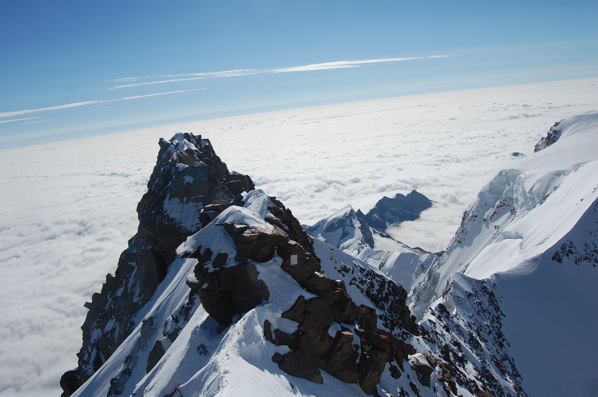
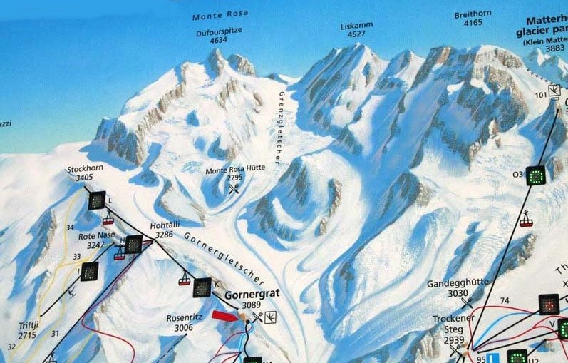

Dufourspitze
Magasság:
4634 m
Ország:
Svájc
Hegység:
Monte Rosa
Wikipedia

A Dufourspitze (4634 m) – Svájc legmagasabb és az Alpok második legmagasabb csúcsa – megmászásához több klasszikus útvonal létezik. A legnépszerűbbek a svájci normál utas gleccsertúra és az olasz oldali gerinctúrák.

1. Svájci normál út (a Nyugati-gerincen és a Sattelen keresztül)
Kiindulópont: Monte Rosa menedékház (Zermatt felől, a Gornergrat vasút Rotenboden állomásától érhető el).Nehézség (SAC): AD− (közepesen nehéz).Szintkülönbség és idő: ~1750 m szintemelkedés; 7–8 óra a csúcsig (összesen 11–13 óra oda-vissza a háztól).Részletek: A leggyakrabban választott útvonal. Egy hosszú, hasadékokkal teli gleccserfutással kezdődik a Monte Rosa-gleccseren, majd a Sattel-hágótól (4359 m) egy kitett, meredek és technikás sziklás-havas gerincmászássá (Westgrat) alakul a csúcsig.
2. Cresta Rey (Déli-borda)
Kiindulópont: Monte Rosa menedékház.Nehézség (SAC): AD+.Szintkülönbség és idő: ~1770 m szintemelkedés; 7–8 óra a csúcsig.Részletek: Egy közvetlenebb, technikásabb sziklamászó alternatíva a déli bordán. Jó minőségű gnájsz sziklákon vezet, ahol a mászás nehézsége eléri a III/IV-es fokozatot. Kevesebb a havas rész, de végig komoly lépésbiztonságot és kitettséget követel meg.
3. Olasz oldali megközelítés (Traverz a Zumsteinspitze felől)
Kiindulópont: Margherita menedékház (Capanna Margherita, 4554 m) vagy a Gnifetti menedékház (az olasz oldali Alagna/Gressoney felől).Nehézség (SAC): AD.Szintkülönbség és idő: ~3-4 óra a Margherita háztól a csúcsig (viszont a házig tartó felmenet nagyon hosszú).Részletek: Gyakran a híres „Spagetti-túra” (Monte Rosa masszívum traverz) részeként másszák. A túrázók először a Zumsteinspitze (4563 m) csúcsára érnek fel, majd onnan egy rendkívül éles, kitett havas-sziklás gerincen ereszkednek le a Grenzsattel-hágóba, ahonnan a Dufourspitze végső sziklatornya indul.
Vissza
Haza